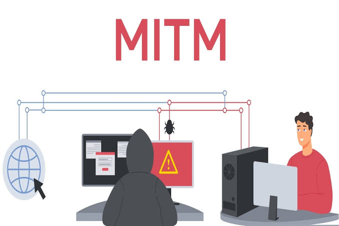

Definición
Un ataque Man in the Middle (MitM) intercepta, sin autorización, la comunicación entre dos dispositivos (Host) conectados a la red.
Este ataque permite a un agente malintecionado manipular el tráfico interceptando de diferentes formas, ya sea para escuchar la comunicación y obtener información como:
- Credenciales de acceso.
- Información financiera.
- Suplantar la identidad de alguna de las víctimas.
